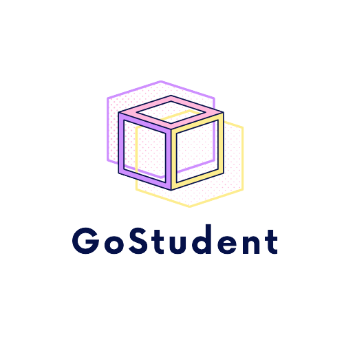

<nav class="navbar navbar-expand-lg navbar-light bg-light">
  <div class="container-fluid">
    <a class="navbar-brand nav-link" routerLink="/"></a>
    
    <button class="navbar-toggler" type="button" data-bs-toggle="collapse" data-bs-target="#navbarSupportedContent" aria-controls="navbarSupportedContent" aria-expanded="false" aria-label="Toggle navigation">
      <span class="navbar-toggler-icon"></span>
    </button>
    
    <div class="collapse navbar-collapse" id="navbarSupportedContent">
      <ul class="navbar-nav me-auto mb-2 mb-lg-0">
        <a class="nav-link" routerLink="home" routerLinkActive="active">Home</a> <!--routerLinkActive: Wenn link active, dann klasse active-->
    
        <!-- <a class="nav-link" *ngIf="isLoggedIn && !isTeacher" routerLink="categories" routerLinkActive="active">Kategorien</a> -->
        <!-- <a class="nav-link" *ngIf="isLoggedIn && !isTeacher" routerLink="levels" routerLinkActive="active">Levels</a> -->
        <a class="nav-link" *ngIf="isLoggedIn && !isTeacher" routerLink="subjects" routerLinkActive="active" >Nachhilfe</a>
    
        <a class="nav-link" *ngIf="isLoggedIn && !isTeacher" routerLink="studentAppointments" routerLinkActive="active">Meine Termine</a>
    
        <a class="nav-link" *ngIf="isLoggedIn && isTeacher" routerLink="admin" routerLinkActive="active">Administration</a>    
        <a class="nav-link" *ngIf="isLoggedIn && isTeacher" routerLink="mySubjects" routerLinkActive="active">meine Angebote</a>    
        <a class="nav-link" *ngIf="isLoggedIn && isTeacher" routerLink="bookedAppointments" routerLinkActive="active">Gebuchte Termine</a>
        
        <a class="nav-link" *ngIf="isLoggedIn" routerLink="profile" routerLinkActive="active">mein Profil</a>
    
        <a routerLink="login" routerLinkActive="active" class="nav-link">{{getLoginLabel()}}</a>
      </ul>

      <form>
        <bs-search></bs-search>
      </form>
    
      <a class="nav-link dropdown-toggle" *ngIf="isLoggedIn" routerLink="messages" routerLinkActive="active"
        id="navbarDropdownMenuLink">
        <i class="fas fa-bell"></i>
        <span class="badge rounded-pill badge-notification bg-danger">1</span>
      </a>
    </div>
  </div>
</nav>

<div class="content">
  <router-outlet></router-outlet>
</div>


<footer class="footer bg-light d-flex flex-column align-items-center justify-content-center">
    <p class="fs-5">© 2022 Moser Lisa-Marie</p>
    <p>
      <a class="text-dark" href="https://www.fh-ooe.at/campus-hagenberg/studiengaenge/bachelor/kommunikation-wissen-medien/">Kommunikation, Wissen, Medien</a>
    </p>
</footer>